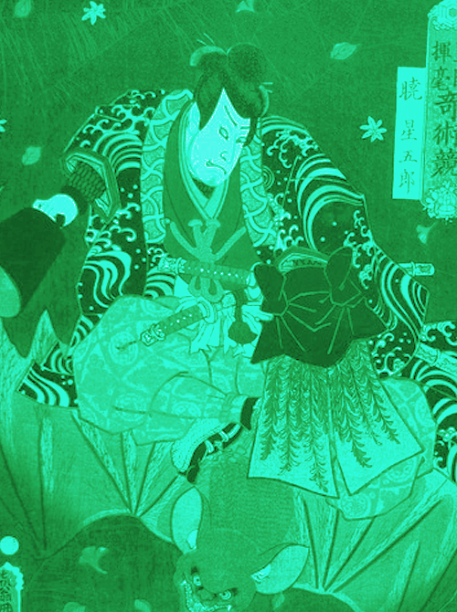

日本に古くからあった芸術と技能の汎称。 特定階級または大衆の教養や娯楽、儀式や祭事などを催す際に付随して行動化されたもの、または行事化したものを特定の形式に系統化して伝承または廃絶された、有形無形のものを言う。
KABUKI
The art which was in Japan from the old days and pan title of a skill. The specific class or popular education and an entertainment, the one which was behavior-ized with the case when a function and a festival are held or event-ized one were system-ized in the specific form and it was handed down from generation to generation or, it was abolished, I say something intangible materially.

kabuki_PT
11/27